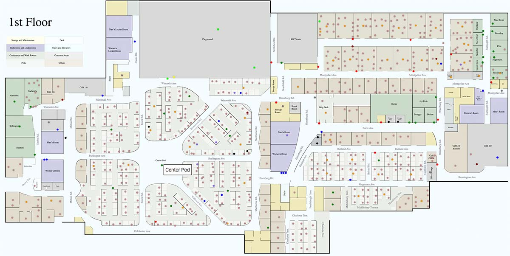
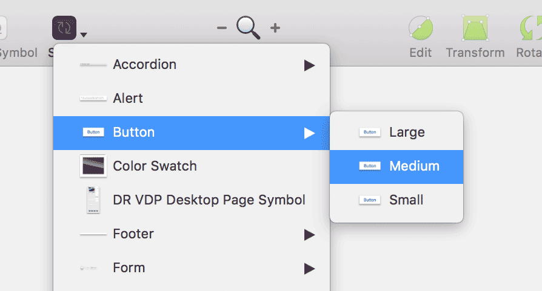
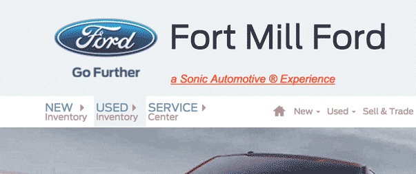

It's the little things...
UX is often a field of little wins that do not need a full case study but deserve some recognition. The following are a few of those wins over the years.
Employee Maps
As a new employee at a fast-growing organization, I found it difficult to locate colleagues and resources within the building. As part of a hackathon, I came up with the idea to create an online map of the organization and led a team to develop a solution within 48 hours. Users could easily add themselves on top of a vector map of the building, search other users and resources and edit as needed. Over the years it has been an invaluable resource to the organization, especially as it has grown.
Design Templates
As tools evolved, so did the tooling. In the beginning, Photoshop was the web design tool of choice, so I helped to establish a PSD pattern library/design system, attempting to corral a photo program to create elements for development. Experiments with Adobe InDesign showed that it was a far better tool for the job, allowing a much closer facsimile of the "real" world (in browser) for faster design and better development. This was an extensive file with lots of deeply nested styles, but provided little input to developers. Recently the team made the switch to Sketch, where a design system was needed as well, so I dove headfirst into the project. Still evolving, the file allows for designing specific UI elements like forms and buttons for various clients, as well as quickly changing fonts and colors. More importantly, it allows developers to inspect the file through a product called Invision. This makes for a much more seamless transition between design and development.
This work helped to contribute to an even more robust design system.
Direct Links
When Ford came to us for a unique design within our system, it came right along with a Lean UX workshop, as Agile development was starting to forge ahead full steam. So as a scrum team, we came up with the idea to look at how we can get users to their destination faster. We knew that approximately 75% of users wanted to go directly to searching or browsing vehicles. In the past, this meant climbing the navigation tree and finding your way through to used or new inventory links. The simple idea of bringing those links out of nested menus and into direct links were tested and was a clear winner. Through click maps, we can see that users are continuing to appreciate these direct links. Again, little wins, backed up by team insight, testing, and data.
